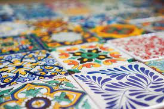
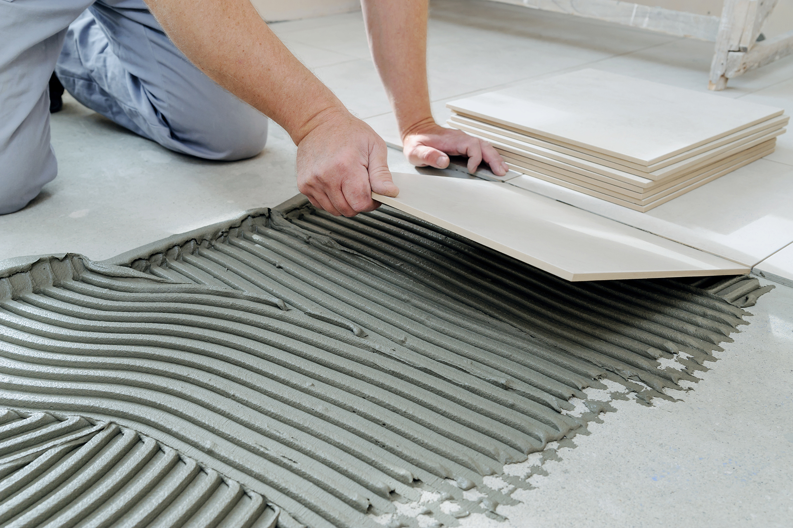
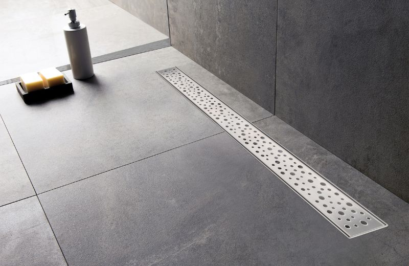
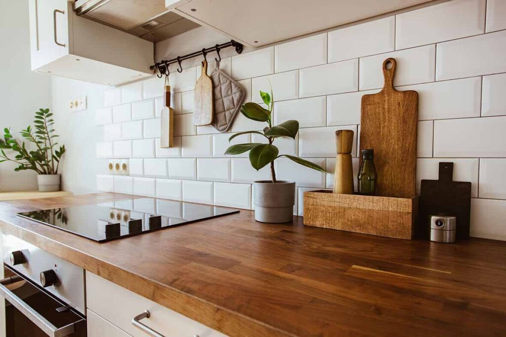

Kako odabrati savršene pločice za Vaš dom?
Vodič za odabir pločica prema stilu, veličini prostora, bojama i funkcionalnosti....
26.07.2024.

Vodič za odabir pločica prema stilu, veličini prostora, bojama i funkcionalnosti....
26.07.2024.
Keramičke pločice su izdržljiv i estetski privlačan materijal koji zahtijeva pravilno održavanje kako bi zadržale svoj besprijekoran izgled i dugovječnost, a u ovom članku saznajte kako ih pravilno održavati, čistiti i štititi od oštećenja.
25.09.2023.

Detaljan vodič o tome kako sami postaviti keramičke pločice – od pripreme podloge do samog polaganja pločica i fugiranja, uz savjete za preciznost i profesionalni izgled.
23.02.2023.

Tuš kabina je jedan od najposećenijih dijelova svakog doma, stoga je važno odabrati keramičke pločice koje nisu samo estetski privlačne, već i dugotrajne i praktične. U ovom članku donosimo vam sve što trebate znati o odabiru i postavljanju pločica za tuš kabinu – od materijala, boja i oblika, do tehnika postavljanja i održavanja.
12.06.2022.

Keramičke pločice u kuhinji nisu samo funkcionalne, već mogu značajno unaprijediti izgled prostora. Bilo da se radi o pločicama za zidove, podove ili kuhinjski backsplash, pravilno odabrane pločice mogu stvoriti ujednačen i elegantan dizajn koji je i dugotrajan i lako održavan.
07.12.2021.